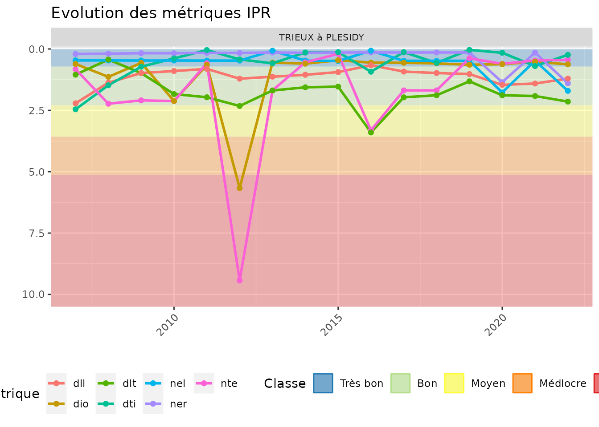

3. Produire une fiche station
Pascal Irz
12/07/2023
Source:vignettes/aspe_03_fiche_station.Rmd
aspe_03_fiche_station.RmdObjectif
Il s’agit de construire, à partir des données de la base Aspe, une fiche station rassemblant plusieurs indicateurs soit pour la dernière opération réalisée, soit en tendance interannuelle.
Le détail des premières étapes de constitution des tables sont donnés dans les autres vignettes.
Activation des packages et chargement des données
load(file = "../../../raw_data/rdata/tables_sauf_mei_2023_04_07_09_39_32.RData")Le peuplement
Construction du dataframe de base
On choisit ici à titre d’exemple la station avec le
sta_id 10502, Le Couesnon à Romazy.
aspe <- aspe::mef_creer_passerelle() %>%
filter(sta_id == 10502) %>%
mef_ajouter_ope_date() %>% # ajout de la date
mef_ajouter_libelle() %>% # ajout des libellés station
mef_ajouter_lots() # ajout des lotsAgrégation des captures à l’opération et calcul de la densité.
ope_capt <- aspe %>%
group_by(sta_id,
pop_id,
pop_libelle,
ope_date,
ope_id,
annee,
esp_code_alternatif) %>%
summarise(effectif = sum(lop_effectif)) %>%
ungroup() %>%
mef_ajouter_surf_calc() %>% # ajout de la surface prospectée
mutate(effectif = replace_na(effectif, 0),
densite = 1000 * effectif / ope_surface_calculee) %>% # calcul densité
droplevels() %>%
mef_ajouter_type_protocole() # Etat du milieu
L’IPR
Graphique
La fonction ip_completer_classes_couleur() sert à
ajouter le code couleur qui convient à chaque classe de qualité en vue
de produire ’arrière-plan du graphique.
classe_ipr <- classe_ipr %>%
ip_completer_classes_couleur()On produit ensuite le graphique avec la fonction
gg_temp_ipr().
gg_temp_ipr(df_ipr = ipr_station,
var_id_sta = pop_libelle,
var_ipr = ipr,
max_axe_y = 35)Les métriques IPR
Construction du tableau
metriques_station <- aspe %>%
select(ope_id,
annee,
pop_libelle) %>%
distinct() %>%
mef_ajouter_metriques() %>%
select(-(ner_theorique:dti_observe)) %>%
pivot_longer(cols = ner:dti,
names_to = "metrique",
values_to = "valeur")Graphiques
Avec la fonction gg_temp_metriq() il est possible de
représenter sur un même graphique les 7 métriques constitutives de l’IPR
et de bien visualiser celles qui sont déclassantes.
gg_temp_metriq(
df_metriques = metriques_station,
var_id_sta = pop_libelle,
var_nom_metrique = metrique,
var_valeur_metrique = valeur
)
On peut préférer la fonction gg_temp_metriq_grille()
pour mieux visualiser les tendances par métrique.
gg_temp_metriq_grille(
df_metriques = metriques_station,
var_id_sta = pop_libelle,
var_nom_metrique = metrique,
var_valeur_metrique = valeur
)
Variables environnementales
env_station <- aspe %>%
select(pop_id,
ope_id,
annee,
pop_libelle) %>%
distinct() %>%
mef_ajouter_ope_env() %>%
mef_ajouter_ope_desc_peche()